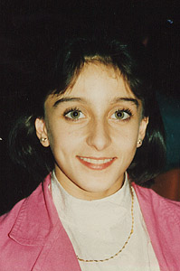

Gina Gogean (ROM)
1994 European AA Champion
1997 World
B and FX Champion
"Giving interviews is the most difficult thing about being a gymnast."
 Medal Total
|
Gina was born on September 8, 1977 in Cimpuri. She trained at the famed CSS Cetate Deva center. Now retired, she's still involved in gymnastics as a coach and judge.
Competition Results